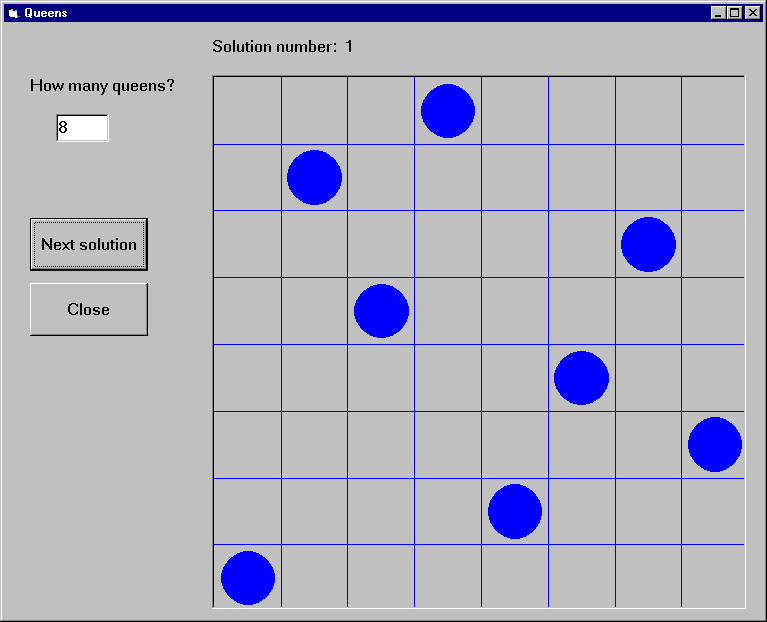

This example gives a Visual Basic user interface to an N-queens program. The purpose of this example is to show how to handle Prolog lists through the Visual Basic interface. The full source of the example is found in the distribution.
The user interface shown in this example will allow the user to specify
the number of queens, and, with the help of the Next Solution
command button all the solutions of the N-Queens problem will be enumerated.
A given solution will be represented in a simple graphical way as a PictureBox,
using the basic Circle and Line methods.

The problem itself will be solved in Prolog,
using a queens(+N,?PositionList) Prolog predicate,
stored in the file queens.
We now present two solutions, using different techniques for retrieving Prolog lists.
Example 3a - N-Queens, generating a variable list into the Prolog call
The first implementation of the N-Queens problem is based on the technique of generating a given length list of Prolog variables into the Prolog query.
For example, if the N-Queens problem is to be solved for N = 4, i.e.
with the query "queens(4,L)", then the problem of retrieving a
list from Visual Basic will arise. However, if the query is presented as
"queens(4,[X1,X2,X3,X4])", then instead of retrieving the list it
is enough to access the X1,X2,X3,X4 values. Since the number of
queens is not fixed in the program, this query has to be generated, and
the retrieval of the Xi values must be done in a cycle.
This approach can always be applied when the format of the solution is known at the time of calling the query.
We now go over the complete code of the program.
Global declarations used in the program (General/declarations):
Dim nQueens As Long 'number of queens
Dim nSol As Long 'index of solution
Dim nActqid As Long 'actual query identifier
Dim nQueryOpen As Boolean 'there is an open query
The initialization of the program will be done when the form window is loaded:
Private Sub Form_Load()
nQueens = 0
nSol = 1
nQueryOpen = False
'initialize Prolog
If PrologInit() <> 1 Then GoTo Err
'Load queens.pl
If PrologQueryCutFail("load_files(app(queens))") <> 1 Then GoTo Err
Exit Sub
Err:
MsgBox "Prolog initialization failed", 48, "Error"
Unload Me
End Sub
Deinitialization of the Prolog engine will be done when the form windows is closed, exactly as for the calculator example.
When the number of queens changes (i.e. the value of the text box
textSpecNo changes), a new query has to be opened,
after the previous query, if there has been any, is closed.
Private Sub textSpecNo_Change()
nQueens = Val(textSpecNo)
nSol = 1
If nQueryOpen Then PrologCloseQuery (nActqid)
'create Prolog query in form: queens(4,[X1,X2,X3,X4])
Q = "queens(" & Str(nQueens) & ", ["
For i = 1 To nQueens - 1 Step 1
Q = Q & "X" & i & ","
Next
Q = Q & "X" & nQueens & "])"
nActqid = PrologOpenQuery(Q)
nQueryOpen = True
End Sub
The Next command button executes and shows the next solution of the
current query:
Private Sub cmdNext_Click()
Dim nPos As Long
Dim aPos(100) As Long
If Not nQueryOpen Then
MsgBox "Specify number of queens first!", 48, ""
Exit Sub
End If
If PrologNextSolution(nActqid) < 1 Then
MsgBox "No more solutions!", 48, ""
Else
For i = 1 To nQueens Step 1
If PrologGetLong(nActqid, "X" & i, nPos) = 1 Then
aPos(i - 1) = nPos
End If
Next i
'display nth solution
txtSolNo = "Solution number: " & Str(nSol)
Call draw_grid(nQueens)
nLine = 1
For Each xElem In aPos
Call draw_circle(nLine, xElem, nQueens)
nLine = nLine + 1
Next
nSol = nSol + 1
End If
End Sub
Drawing itself is performed by the draw_grid and
draw_circle procedures.
Example 3b - N-Queens, converting the resulting Prolog list to an atom
The second variant of the N-Queens program uses the technique of
converting the resulting Prolog list into a string via the
PrologGetString function, and decomposing it into an array in
Visual Basic. Here we show only those parts of the program which have
changed with respect to the first version.
In the textSpecNo_Change routine the queens/2 predicate is
called with a single variable in its second argument:
Q = "queens(" & Str(nQueens) & ",Queens)"
nActqid = PrologOpenQuery(Q)
In the cmdNext_Click routine the solution list is retrieved into
a single string which is then split up along the commas, and deposited
into the aPos array by the convert_prolog_list routine.
(aPos is now an array of strings, rather than integers.)
Finally, we include the code of the routine for splitting up a Prolog list:
Private Sub convert_prolog_list(ByVal inList As String,
ByRef inArray() As String)
'drop brackets
xList = Mid(inList, 2, Len(inList) - 2)
i = 0
startPos = 1
xList = Mid(xList, startPos)
Do While xList <> ""
endPos = InStr(xList, ",")
If endPos = 0 Then
xElem = xList
inArray(i) = xElem
Exit Do
End If
xElem = Mid(xList, 1, endPos - 1)
inArray(i) = xElem
i = i + 1
xList = Mid(xList, endPos + 1)
startPos = endPos + 1
Loop
End Sub